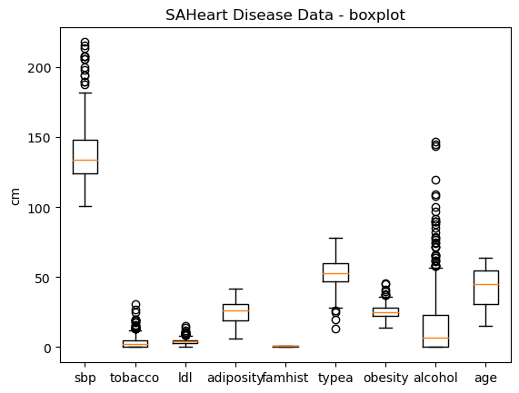
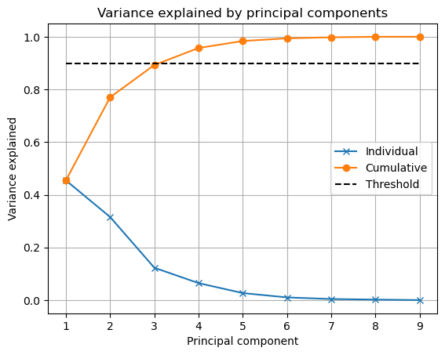
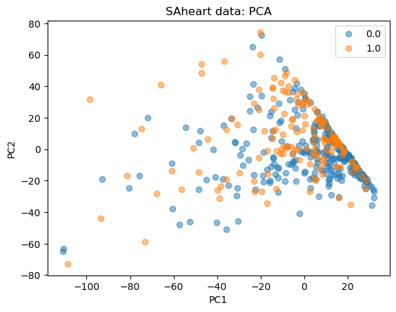
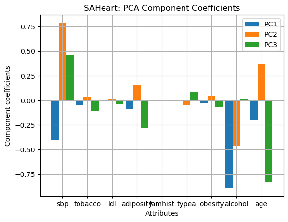
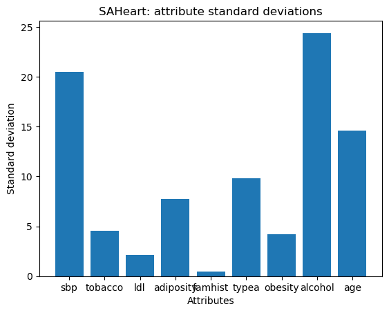
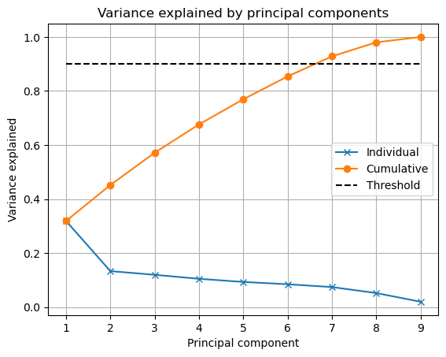
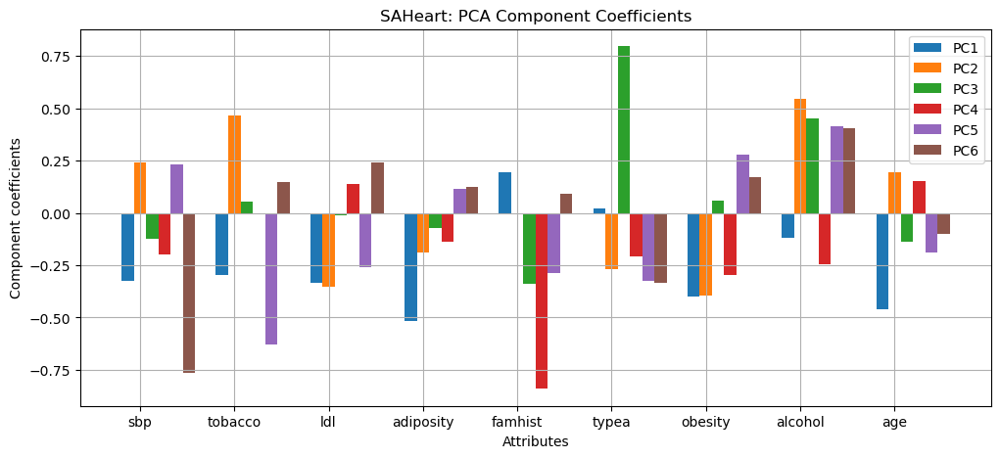
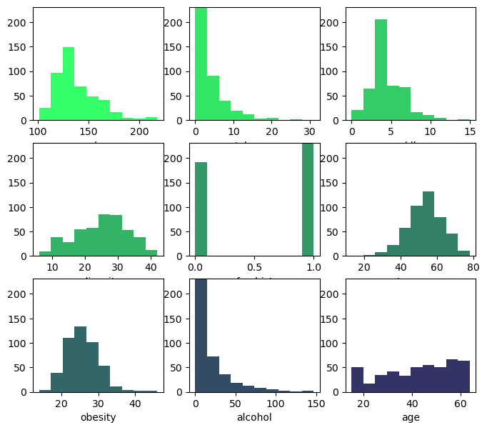
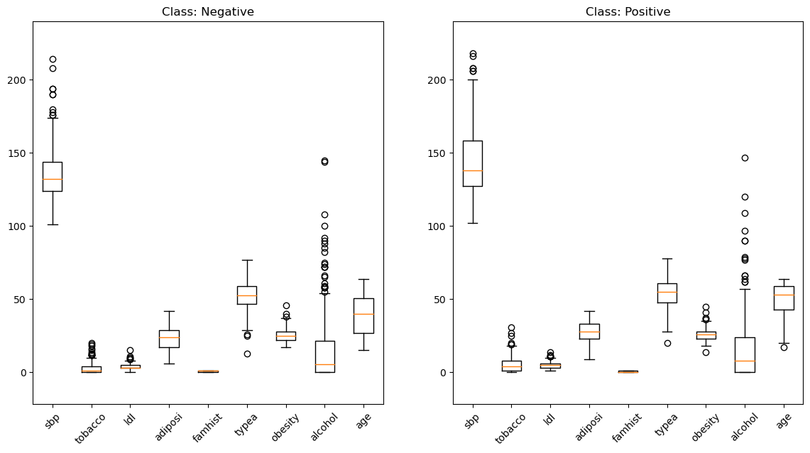
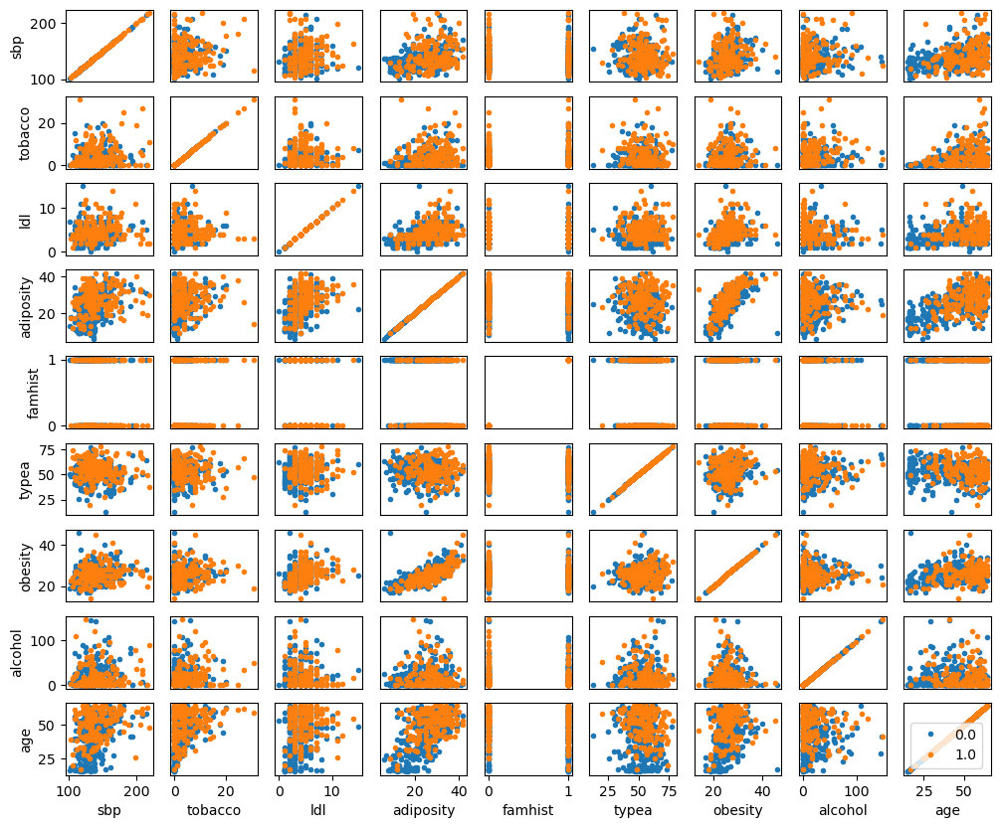

import pandas as pd
import numpy as np
import matplotlib.pyplot as plt
from matplotlib.pyplot import figure, plot, title, legend, xlabel, ylabel, showProject 1: South Africa Heart Disease
Loading data
df = pd.read_csv(r"C:\Users\Owner\Desktop\on campis\SAheart.data.txt", index_col = 'row.names')df.head(20)| sbp | tobacco | ldl | adiposity | famhist | typea | obesity | alcohol | age | chd | |
|---|---|---|---|---|---|---|---|---|---|---|
| row.names | ||||||||||
| 1 | 160 | 12.00 | 5.73 | 23.11 | Present | 49 | 25.30 | 97.20 | 52 | 1 |
| 2 | 144 | 0.01 | 4.41 | 28.61 | Absent | 55 | 28.87 | 2.06 | 63 | 1 |
| 3 | 118 | 0.08 | 3.48 | 32.28 | Present | 52 | 29.14 | 3.81 | 46 | 0 |
| 4 | 170 | 7.50 | 6.41 | 38.03 | Present | 51 | 31.99 | 24.26 | 58 | 1 |
| 5 | 134 | 13.60 | 3.50 | 27.78 | Present | 60 | 25.99 | 57.34 | 49 | 1 |
| 6 | 132 | 6.20 | 6.47 | 36.21 | Present | 62 | 30.77 | 14.14 | 45 | 0 |
| 7 | 142 | 4.05 | 3.38 | 16.20 | Absent | 59 | 20.81 | 2.62 | 38 | 0 |
| 8 | 114 | 4.08 | 4.59 | 14.60 | Present | 62 | 23.11 | 6.72 | 58 | 1 |
| 9 | 114 | 0.00 | 3.83 | 19.40 | Present | 49 | 24.86 | 2.49 | 29 | 0 |
| 10 | 132 | 0.00 | 5.80 | 30.96 | Present | 69 | 30.11 | 0.00 | 53 | 1 |
| 11 | 206 | 6.00 | 2.95 | 32.27 | Absent | 72 | 26.81 | 56.06 | 60 | 1 |
| 12 | 134 | 14.10 | 4.44 | 22.39 | Present | 65 | 23.09 | 0.00 | 40 | 1 |
| 13 | 118 | 0.00 | 1.88 | 10.05 | Absent | 59 | 21.57 | 0.00 | 17 | 0 |
| 14 | 132 | 0.00 | 1.87 | 17.21 | Absent | 49 | 23.63 | 0.97 | 15 | 0 |
| 15 | 112 | 9.65 | 2.29 | 17.20 | Present | 54 | 23.53 | 0.68 | 53 | 0 |
| 16 | 117 | 1.53 | 2.44 | 28.95 | Present | 35 | 25.89 | 30.03 | 46 | 0 |
| 17 | 120 | 7.50 | 15.33 | 22.00 | Absent | 60 | 25.31 | 34.49 | 49 | 0 |
| 18 | 146 | 10.50 | 8.29 | 35.36 | Present | 78 | 32.73 | 13.89 | 53 | 1 |
| 19 | 158 | 2.60 | 7.46 | 34.07 | Present | 61 | 29.30 | 53.28 | 62 | 1 |
| 20 | 124 | 14.00 | 6.23 | 35.96 | Present | 45 | 30.09 | 0.00 | 59 | 1 |
df.shape(462, 10)Description of variables including type, NaN values count, count, mean, standard deviance, maximum and minimum value, as well as quartiles.
df.info()<class 'pandas.core.frame.DataFrame'>
Int64Index: 462 entries, 1 to 463
Data columns (total 10 columns):
# Column Non-Null Count Dtype
--- ------ -------------- -----
0 sbp 462 non-null int64
1 tobacco 462 non-null float64
2 ldl 462 non-null float64
3 adiposity 462 non-null float64
4 famhist 462 non-null object
5 typea 462 non-null int64
6 obesity 462 non-null float64
7 alcohol 462 non-null float64
8 age 462 non-null int64
9 chd 462 non-null int64
dtypes: float64(5), int64(4), object(1)
memory usage: 39.7+ KBdf.describe()| sbp | tobacco | ldl | adiposity | typea | obesity | alcohol | age | chd | |
|---|---|---|---|---|---|---|---|---|---|
| count | 462.000000 | 462.000000 | 462.000000 | 462.000000 | 462.000000 | 462.000000 | 462.000000 | 462.000000 | 462.000000 |
| mean | 138.326840 | 3.635649 | 4.740325 | 25.406732 | 53.103896 | 26.044113 | 17.044394 | 42.816017 | 0.346320 |
| std | 20.496317 | 4.593024 | 2.070909 | 7.780699 | 9.817534 | 4.213680 | 24.481059 | 14.608956 | 0.476313 |
| min | 101.000000 | 0.000000 | 0.980000 | 6.740000 | 13.000000 | 14.700000 | 0.000000 | 15.000000 | 0.000000 |
| 25% | 124.000000 | 0.052500 | 3.282500 | 19.775000 | 47.000000 | 22.985000 | 0.510000 | 31.000000 | 0.000000 |
| 50% | 134.000000 | 2.000000 | 4.340000 | 26.115000 | 53.000000 | 25.805000 | 7.510000 | 45.000000 | 0.000000 |
| 75% | 148.000000 | 5.500000 | 5.790000 | 31.227500 | 60.000000 | 28.497500 | 23.892500 | 55.000000 | 1.000000 |
| max | 218.000000 | 31.200000 | 15.330000 | 42.490000 | 78.000000 | 46.580000 | 147.190000 | 64.000000 | 1.000000 |
Change string variables to integers for the creation of arrays
df = df.replace('Present',0)
df = df.replace('Absent',1)
df| sbp | tobacco | ldl | adiposity | famhist | typea | obesity | alcohol | age | chd | |
|---|---|---|---|---|---|---|---|---|---|---|
| row.names | ||||||||||
| 1 | 160 | 12.00 | 5.73 | 23.11 | 0 | 49 | 25.30 | 97.20 | 52 | 1 |
| 2 | 144 | 0.01 | 4.41 | 28.61 | 1 | 55 | 28.87 | 2.06 | 63 | 1 |
| 3 | 118 | 0.08 | 3.48 | 32.28 | 0 | 52 | 29.14 | 3.81 | 46 | 0 |
| 4 | 170 | 7.50 | 6.41 | 38.03 | 0 | 51 | 31.99 | 24.26 | 58 | 1 |
| 5 | 134 | 13.60 | 3.50 | 27.78 | 0 | 60 | 25.99 | 57.34 | 49 | 1 |
| ... | ... | ... | ... | ... | ... | ... | ... | ... | ... | ... |
| 459 | 214 | 0.40 | 5.98 | 31.72 | 1 | 64 | 28.45 | 0.00 | 58 | 0 |
| 460 | 182 | 4.20 | 4.41 | 32.10 | 1 | 52 | 28.61 | 18.72 | 52 | 1 |
| 461 | 108 | 3.00 | 1.59 | 15.23 | 1 | 40 | 20.09 | 26.64 | 55 | 0 |
| 462 | 118 | 5.40 | 11.61 | 30.79 | 1 | 64 | 27.35 | 23.97 | 40 | 0 |
| 463 | 132 | 0.00 | 4.82 | 33.41 | 0 | 62 | 14.70 | 0.00 | 46 | 1 |
462 rows × 10 columns
Check for outliers
from matplotlib.pyplot import boxplot, xticks, ylabel, title, show
boxplot(X)
xticks(range(1,10),attributeNames)
ylabel('cm')
title('SAHeart Disease Data - boxplot')
show()
Create matrix with values
raw_data = df.values
raw_dataarray([[1.600e+02, 1.200e+01, 5.730e+00, ..., 9.720e+01, 5.200e+01,
1.000e+00],
[1.440e+02, 1.000e-02, 4.410e+00, ..., 2.060e+00, 6.300e+01,
1.000e+00],
[1.180e+02, 8.000e-02, 3.480e+00, ..., 3.810e+00, 4.600e+01,
0.000e+00],
...,
[1.080e+02, 3.000e+00, 1.590e+00, ..., 2.664e+01, 5.500e+01,
0.000e+00],
[1.180e+02, 5.400e+00, 1.161e+01, ..., 2.397e+01, 4.000e+01,
0.000e+00],
[1.320e+02, 0.000e+00, 4.820e+00, ..., 0.000e+00, 4.600e+01,
1.000e+00]])cols = range(0, 9)
X = raw_data[:, cols]
X = np.asarray(X, dtype = np.intc)
Xarray([[160, 12, 5, ..., 25, 97, 52],
[144, 0, 4, ..., 28, 2, 63],
[118, 0, 3, ..., 29, 3, 46],
...,
[108, 3, 1, ..., 20, 26, 55],
[118, 5, 11, ..., 27, 23, 40],
[132, 0, 4, ..., 14, 0, 46]], dtype=int32)attributeNames = np.asarray(df.columns[cols])
attributeNamesarray(['sbp', 'tobacco', 'ldl', 'adiposity', 'famhist', 'typea',
'obesity', 'alcohol', 'age'], dtype=object)classLabels = raw_data[:,-1] # -1 takes the last column
classLabelsarray([1., 1., 0., 1., 1., 0., 0., 1., 0., 1., 1., 1., 0., 0., 0., 0., 0.,
1., 1., 1., 1., 0., 0., 0., 0., 1., 0., 1., 0., 1., 1., 1., 1., 1.,
0., 1., 0., 0., 0., 1., 1., 0., 0., 1., 0., 0., 1., 1., 0., 0., 0.,
0., 1., 1., 0., 0., 0., 1., 0., 0., 0., 0., 0., 0., 0., 0., 0., 0.,
0., 1., 0., 0., 0., 0., 0., 0., 0., 1., 1., 0., 1., 1., 1., 1., 0.,
0., 1., 0., 0., 0., 0., 1., 0., 1., 0., 0., 0., 0., 1., 0., 0., 0.,
0., 0., 0., 0., 1., 1., 0., 0., 0., 1., 0., 1., 1., 0., 1., 0., 1.,
0., 0., 0., 0., 1., 0., 1., 0., 0., 1., 0., 0., 1., 1., 0., 0., 1.,
0., 0., 0., 0., 1., 1., 0., 0., 0., 0., 0., 1., 1., 1., 0., 0., 0.,
0., 1., 1., 0., 0., 0., 1., 0., 1., 0., 0., 0., 0., 1., 1., 0., 0.,
0., 0., 0., 0., 0., 1., 0., 0., 0., 0., 0., 0., 1., 1., 1., 1., 0.,
0., 0., 1., 1., 1., 1., 0., 0., 0., 0., 0., 1., 0., 0., 1., 0., 0.,
0., 0., 0., 0., 0., 0., 0., 1., 0., 0., 0., 1., 1., 0., 0., 0., 0.,
1., 0., 1., 0., 0., 1., 1., 1., 1., 1., 0., 1., 0., 0., 1., 0., 0.,
0., 0., 1., 0., 0., 1., 1., 0., 1., 0., 0., 1., 0., 0., 1., 0., 0.,
1., 1., 0., 1., 0., 1., 0., 0., 0., 1., 0., 0., 0., 0., 1., 1., 1.,
0., 0., 1., 1., 1., 0., 0., 0., 1., 0., 1., 0., 1., 0., 0., 0., 0.,
1., 0., 0., 0., 1., 0., 1., 0., 0., 1., 0., 0., 1., 0., 1., 0., 0.,
0., 1., 0., 0., 1., 0., 1., 0., 0., 0., 0., 0., 1., 0., 0., 0., 0.,
1., 0., 1., 0., 0., 0., 0., 0., 0., 1., 1., 1., 0., 1., 0., 0., 0.,
0., 1., 1., 0., 0., 1., 1., 0., 1., 0., 0., 0., 1., 1., 0., 1., 0.,
0., 0., 0., 1., 0., 0., 0., 1., 0., 0., 0., 0., 0., 1., 0., 0., 0.,
0., 0., 0., 0., 0., 1., 0., 0., 1., 0., 0., 1., 0., 1., 0., 1., 1.,
1., 0., 0., 0., 0., 0., 1., 1., 0., 0., 0., 1., 1., 0., 0., 1., 1.,
0., 0., 1., 0., 1., 1., 0., 1., 0., 0., 0., 0., 0., 0., 1., 1., 1.,
0., 0., 0., 0., 0., 0., 0., 0., 0., 0., 0., 0., 0., 0., 0., 0., 0.,
0., 0., 0., 0., 1., 0., 0., 1., 0., 0., 0., 1., 1., 1., 0., 0., 1.,
0., 0., 1.])# Then determine which classes are in the data by finding the set of
# unique class labels
classNames = sorted(set(classLabels))
classNames[0.0, 1.0]# We can assign each type of Iris class with a number by making a
# Python dictionary as so:
classDict = dict(zip(classNames,range(len(classNames))))
classDict{0.0: 0, 1.0: 1}y = np.array([classDict[cl] for cl in classLabels])
N, M = X.shape
C = len(classNames)PCA
Scree plot
import matplotlib.pyplot as plt
from scipy.linalg import svd
# Subtract mean value from data
Y = X - np.ones((N,1))*X.mean(axis=0)
Y = np.asarray(Y, dtype = np.intc)
# PCA by computing SVD of Y
U,S,V = svd(Y,full_matrices=False)
# Compute variance explained by principal components
rho = (S*S) / (S*S).sum()
threshold = 0.9
# Plot variance explained
plt.figure()
plt.plot(range(1,len(rho)+1),rho,'x-')
plt.plot(range(1,len(rho)+1),np.cumsum(rho),'o-')
plt.plot([1,len(rho)],[threshold, threshold],'k--')
plt.title('Variance explained by principal components');
plt.xlabel('Principal component');
plt.ylabel('Variance explained');
plt.legend(['Individual','Cumulative','Threshold'])
plt.grid()
plt.show()
# PCA by computing SVD of Y
U,S,Vh = svd(Y,full_matrices=False)
# scipy.linalg.svd returns "Vh", which is the Hermitian (transpose)
# of the vector V. So, for us to obtain the correct V, we transpose:
V = Vh.T
# Project the centered data onto principal component space
Z = Y @ V
# Indices of the principal components to be plotted
i = 0
j = 1
# Plot PCA of the data
f = figure()
title('SAheart data: PCA')
#Z = array(Z)
for c in range(C):
# select indices belonging to class c:
class_mask = y==c
plot(Z[class_mask,i], Z[class_mask,j], 'o', alpha=.5)
legend(classNames)
xlabel('PC{0}'.format(i+1))
ylabel('PC{0}'.format(j+1))
# Output result to screen
show()
Component coefficients
U,S,Vh = svd(Y,full_matrices=False)
V=Vh.T
N,M = X.shape
# We saw in 2.1.3 that the first 3 components explaiend more than 90
# percent of the variance. Let's look at their coefficients:
pcs = [0,1,2]
legendStrs = ['PC'+str(e+1) for e in pcs]
c = ['r','g','b']
bw = .3
r = np.arange(1,M+1)
for i in pcs:
plt.bar(r+i*bw, V[:,i], width=bw)
plt.xticks(r+bw, attributeNames)
plt.xlabel('Attributes')
plt.ylabel('Component coefficients')
plt.legend(legendStrs)
plt.grid()
plt.title('SAHeart: PCA Component Coefficients')
plt.show()
pcs = [0,1,2]
for i in pcs:
print('PC',i+1)
print(V[:,i])PC 1
[-4.05467456e-01 -4.99332923e-02 -4.33822325e-03 -8.92188277e-02
1.08420217e-19 -1.03309177e-03 -2.57074859e-02 -8.86057140e-01
-1.98405622e-01]
PC 2
[ 0.78753609 0.037787 0.01997402 0.15836762 0. -0.05133517
0.04947829 -0.46200656 0.36653283]
PC 3
[ 4.62516947e-01 -1.02231988e-01 -3.31864416e-02 -2.82673127e-01
8.67361738e-19 9.09991032e-02 -6.53004980e-02 9.44181942e-03
-8.25825114e-01]Classes projections onto components
all_negative_data = Y[y==0,:]
pcs = [0,1,2]
for i in pcs:
print('Negative observation PC',i+1)
print(all_negative_data[i,:])
print(' ')
print('Projection negative PC', i+1)
print(all_negative_data[i,:]@V[:,i])
print(' ')Negative observation PC 1
[-20 -3 -1 7 0 -1 3 -13 3]
Projection negative PC 1
18.486392021898233
Negative observation PC 2
[-6 2 1 11 0 8 4 -2 2]
Projection negative PC 2
-1.4433141857208174
Negative observation PC 3
[ 3 0 -1 -8 0 5 -5 -14 -4]
Projection negative PC 3
7.634735282743502
pcs = [0,1,2]
# Projection and observation of present class
all_positive_data = Y[y==1,:]
for i in pcs:
print('Positive observation PC',i+1)
print(all_positive_data[i,:])
print(' ')
print('Projection positive PC', i+1)
print(all_positive_data[i,:]@V[:,i])
print(' ')Positive observation PC 1
[21 8 0 -1 0 -4 0 80 9]
Projection positive PC 1
-81.491153551126
Positive observation PC 2
[ 5 -3 0 3 0 1 2 -14 20]
Projection positive PC 2
18.145792233414742
Positive observation PC 3
[31 3 1 13 0 -2 5 7 15]
Projection positive PC 3
-2.506392363862125
Graph of each variable’s standard deviations
import matplotlib.pyplot as plt
from scipy.linalg import svd
r = np.arange(1,X.shape[1]+1)
plt.bar(r, np.std(X,0))
plt.xticks(r, attributeNames)
plt.ylabel('Standard deviation')
plt.xlabel('Attributes')
plt.title('SAHeart: attribute standard deviations')Text(0.5, 1.0, 'SAHeart: attribute standard deviations')
PCA with standardized dataset
# Subtract the mean from the data and divide by the attribute standard
# deviation to obtain a standardized dataset:
Y2 = X - np.ones((N, 1))*X.mean(0)
Y2 = Y2*(1/np.std(Y2,0))
# Here were utilizing the broadcasting of a row vector to fit the dimensions
# of Y2
U,S,Vh = svd(Y2,full_matrices=False)
V2=Vh.T
N2,M2 = X.shape
# Compute variance explained by principal components
rho = (S*S) / (S*S).sum()
threshold = 0.9
# Plot variance explained
plt.figure()
plt.plot(range(1,len(rho)+1),rho,'x-')
plt.plot(range(1,len(rho)+1),np.cumsum(rho),'o-')
plt.plot([1,len(rho)],[threshold, threshold],'k--')
plt.title('Variance explained by principal components');
plt.xlabel('Principal component');
plt.ylabel('Variance explained');
plt.legend(['Individual','Cumulative','Threshold'])
plt.grid()
plt.show()
# We saw in 2.1.3 that the first 3 components explaiend more than 90
# percent of the variance. Let's look at their coefficients:
pcs = [0,1,2,3,4,5]
legendStrs = ['PC'+str(e+1) for e in pcs]
c = ['r','g','b']
bw = .13
r = np.arange(1,M2+1)
plt.figure(figsize=(12,5))
for i in pcs:
plt.subplot()
plt.bar(r+i*bw, V2[:,i], width=bw)
plt.xticks(r+bw, attributeNames)
plt.xlabel('Attributes')
plt.ylabel('Component coefficients')
plt.legend(legendStrs)
plt.grid()
plt.title('SAHeart: PCA Component Coefficients')
plt.show()
pcs = [0,1,2,3,4,5]
for i in pcs:
print('PC',i+1)
print(V2[:,i])PC 1
[-0.32515572 -0.29679111 -0.3350829 -0.51744732 0.19579801 0.01980828
-0.40122777 -0.11961268 -0.46058264]
PC 2
[ 0.24039188 0.46500387 -0.35405988 -0.19050686 -0.00257373 -0.26737564
-0.39544085 0.54735383 0.19200479]
PC 3
[-0.12242603 0.05454167 -0.01107307 -0.07353514 -0.33720033 0.79656035
0.06002309 0.45371085 -0.13725262]
PC 4
[-0.19986942 -0.00226562 0.1398819 -0.13739481 -0.84038687 -0.20991237
-0.29848031 -0.24308671 0.15201271]
PC 5
[ 0.23030393 -0.62806844 -0.25812766 0.11658561 -0.28681415 -0.3248816
0.27938318 0.41369569 -0.18777257]
PC 6
[-0.76268467 0.14785984 0.24239452 0.12390782 0.08942369 -0.33498305
0.16939436 0.40395795 -0.10126501]# Projection and observation of absent class
all_negative_data = Y2[y==0,:]
for i in pcs:
print('Negative observation PC',i+1)
print(all_negative_data[i,:])
print(' ')
print('Projection Negative PC', i+1)
print(all_negative_data[i,:]@V2[:,i])
print(' ')Negative observation PC 1
[-0.99280637 -0.73592703 -0.58252015 0.9116801 -1.18585412 -0.11256317
0.81709446 -0.56138757 0.21818356]
Projection Negative PC 1
-0.3309216504091384
Negative observation PC 2
[-0.3090164 0.58019537 0.82650765 1.42627534 -1.18585412 0.9071267
1.05466377 -0.11025354 0.1496582 ]
Projection Negative PC 2
-1.0570016321396427
Negative observation PC 3
[ 0.17940501 0.14148791 -0.58252015 -1.14670087 0.84327404 0.60121974
-1.32102936 -0.60239976 -0.33001932]
Projection Negative PC 3
-0.036229804075974315
Negative observation PC 4
[-1.18817494 -0.73592703 -0.58252015 -0.76075444 -1.18585412 -0.41847013
-0.37075211 -0.60239976 -0.94674757]
Projection Negative PC 4
1.4597850634610399
Negative observation PC 5
[-0.99280637 -0.73592703 -1.52187203 -1.91859373 0.84327404 0.60121974
-1.08346005 -0.68442413 -1.7690519 ]
Projection Negative PC 5
-0.288130401840477
Negative observation PC 6
[-0.3090164 -0.73592703 -1.52187203 -1.01805206 0.84327404 -0.41847013
-0.60832142 -0.68442413 -1.90610262]
Projection Negative PC 6
-0.33908424672744053
# Projection and observation of present class
all_positive_data = Y2[y==1,:]
for i in pcs:
print('Positive observation PC',i+1)
print(all_positive_data[i,:])
print(' ')
print('Projection positive PC', i+1)
print(all_positive_data[i,:]@V2[:,i])
print(' ')Positive observation PC 1
[ 1.05856354 1.89631778 0.35683172 -0.2461592 -1.18585412 -0.41847013
-0.1331828 3.29375784 0.62933573]
Projection positive PC 1
-1.7700787625087326
Positive observation PC 2
[ 0.27708929 -0.73592703 -0.11284422 0.39708486 0.84327404 0.19334379
0.57952514 -0.60239976 1.3831147 ]
Projection positive PC 2
-0.6584875465166402
Positive observation PC 3
[ 1.54698495 0.79954911 0.82650765 1.68357296 -1.18585412 -0.21453216
1.29223308 0.29986832 1.04048789]
Projection positive PC 3
0.021054017788524754
Positive observation PC 4
[-0.21133212 2.11567151 -0.58252015 0.26843605 -1.18585412 0.70318873
-0.1331828 1.65327043 0.42375964]
Projection positive PC 4
0.4703292272987059
Positive observation PC 5
[-1.18817494 0.14148791 -0.11284422 -1.40399849 -1.18585412 0.9071267
-0.60832142 -0.43835102 1.04048789]
Projection positive PC 5
-0.9983260807297992
Positive observation PC 6
[-0.3090164 -0.73592703 0.35683172 0.65438248 -1.18585412 1.62090962
1.05466377 -0.68442413 0.69786109]
Projection positive PC 6
-0.5230688965844813
Visualization of dataset
Distribution of variables
import pandas as pdNon-stardardized data
from matplotlib.pyplot import figure, subplot, hist, xlabel, ylim, show
import numpy as np
figure(figsize=(8,7))
u = int(np.floor(np.sqrt(M))); v = int(np.ceil(float(M)/u))
for i in range(M):
subplot(u,v,i+1)
hist(X[:,i], color=(0.2, 1-i*0.1, 0.4))
xlabel(attributeNames[i])
ylim(0,N/2)
show()
from matplotlib.pyplot import boxplot, xticks, ylabel, title, show
boxplot(X)
xticks(range(1,10),attributeNames)
ylabel('cm')
title('SAHeart Disease Data - boxplot')
show()
from matplotlib.pyplot import (figure, subplot, boxplot, title, xticks, ylim,
show)
classNamesp= ['Negative','Positive']
figure(figsize=(14,7))
for c in range(C):
subplot(1,C,c+1)
class_mask = (y==c)
boxplot(X[class_mask,:])
#title('Class: {0}'.format(classNames[c]))
title('Class: '+classNamesp[c])
xticks(range(1,len(attributeNames)+1), [a[:7] for a in attributeNames], rotation=45)
y_up = X.max()+(X.max()-X.min())*0.1; y_down = X.min()-(X.max()-X.min())*0.1
ylim(y_down, y_up)
show()
from matplotlib.pyplot import (figure, subplot, plot, xlabel, ylabel,
xticks, yticks,legend,show)
figure(figsize=(12,10))
for m1 in range(M):
for m2 in range(M):
subplot(M, M, m1*M + m2 + 1)
for c in range(C):
class_mask = (y==c)
plot(np.array(X[class_mask,m2]), np.array(X[class_mask,m1]), '.')
if m1==M-1:
xlabel(attributeNames[m2])
else:
xticks([])
if m2==0:
ylabel(attributeNames[m1])
else:
yticks([])
#ylim(0,X.max()*1.1)
#xlim(0,X.max()*1.1)
legend(classNames)
show()
